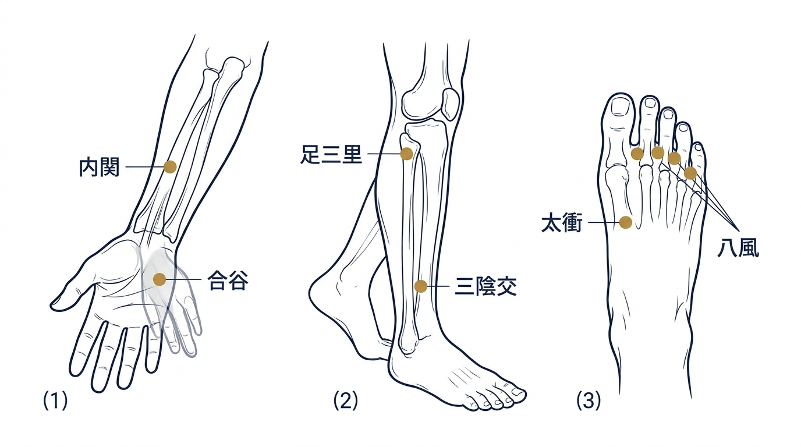

胃がんの鍼灸
胃粘膜の悪性腫瘍。標準治療を最優先とし、主治医許可のもと副作用の吐き気・倦怠感・不安の緩和とQOL向上を支援します。

このようなお悩みはありませんか？
- ✓抗がん剤や術後の吐き気・食欲不振がつらい
- ✓胃の切除後や治療に伴う強い倦怠感・だるさがある
- ✓治療への不安やストレスで眠りが浅い
- ✓手足のしびれや首肩のこりで体力が落ちている
原因・メカニズム
胃の最も内側の粘膜から発生する悪性腫瘍で、ほとんどが腺がん（分化型・未分化型）です。未分化型は進行が早い傾向があります。明確な単独原因は未解明ですが、ピロリ菌感染による慢性胃炎が最大のリスク要因とされ、塩分の多い食事、野菜や果物の不足、喫煙、過度な飲酒、ストレスも発症に関与します。初期は胃痛や胸やけ、吐き気など胃炎と似た症状で進行すると吐血や黒色便、だるさが生じます。
当院の施術アプローチ
がんの種類で代表的なツボとセルフケアの目安
実際の施術ではお一人おひとりの体質・症状に合わせて選穴しますが、がん支持療法（標準がん治療に伴う疼痛・CIPN・悪心嘔吐・倦怠感のQOL緩和）の臨床でよく用いられる代表的な経穴（ツボ）は以下の通りです。

| ツボ名（経穴） | 位置の目安 | 主な狙い・役割 | セルフケアの注意点 |
|---|---|---|---|
| 内関（ないかん） | 手首内側横ジワから肘側へ指3本分、2腱の間 | 化学療法誘発性悪心・嘔吐（CINV）・不安の緩和 | 乳がん腋窩郭清後の患側上肢は避け必ず健側を使用 |
| 合谷（ごうこく） | 手の甲、親指と人差し指の骨が交わる手前 | がん関連疼痛・頭痛・末梢しびれ（CIPN）緩和 | 患肢・浮腫側・点滴側は回避。血小板低下時は内出血注意 |
| 足三里（あしさんり） | 膝外側下のくぼみから指4本分下、すね外側 | 悪心・食欲不振・がん関連倦怠感（CRF）の緩和 | 骨転移・下肢リンパ浮腫・血栓疑いのある脚は避ける |
| 三陰交（さんいんこう） | 内くるぶし頂点から指4本分上、すね骨の後ろ際 | 倦怠感・睡眠の質・ホルモン療法のほてりケア | 骨盤内リンパ節郭清による下肢浮腫がある場合は回避 |
| 太衝（たいしょう） | 足の甲、親指と人差し指の骨が交わる手前 | 疼痛・ストレス・CIPNによる足部違和感の緩和 | 感覚鈍麻時はお灸熱傷・皮膚損傷に厳重注意 |
| 八風（はっぷう） | 足の甲、5本の足指のまたの付け根付近 | 化学療法誘発性末梢神経障害（CIPN）の足先しびれ | 好中球減少期・足部浮腫・傷がある場合は禁忌 |
査読論文が示す「がん支持療法（標準がん治療に伴う疼痛・CIPN・悪心嘔吐・倦怠感のQOL緩和）×鍼灸」の科学的エビデンス
個別疾患ごとの大規模試験が限られる領域も含め、国際的な医学データベース（PubMed・Cochrane等）で報告されているがん支持療法（標準がん治療に伴う疼痛・CIPN・悪心嘔吐・倦怠感のQOL緩和）領域の代表的な査読済み鍼灸研究をまとめました（いずれも標準治療との併用や研究上の限界を含めて正確に掲載しています）。
| 年・研究デザイン | 対象・規模 | 主な結果と臨床的意義 | 限界・出典 |
|---|---|---|---|
| 2022年 国際診療ガイドライン | SIO-ASCO合同ガイドライン（227文献レビュー） | アロマターゼ阻害薬関節痛への鍼を推奨、一般的がん疼痛・筋骨格痛への鍼・指圧を推奨選択肢と明記（中等度）。 | がん自体を治す治療ではなく標準治療と併用する支持療法。 J Clin Oncol (PMID: 36122322) |
| 2020年 メタ解析 | がん関連疼痛 17 RCTs（n=1,111） | 偽鍼比で疼痛低減（MD -1.38）、鎮痛薬併用で疼痛低減（MD -1.44）およびオピオイド使用量減少（-30mg/日）。 | 異質性高くGRADE中等度。オピオイド調整は必ず主治医判断。 JAMA Oncol (PMID: 31855257) |
| 2020年 3群パイロットRCT | 化学療法誘発性末梢神経障害（CIPN）75名登録 | 通常ケア比で8週時の疼痛（p=0.05）・ピリピリ感（p=0.02）・しびれ（p=0.005）が有意改善、12週も持続。 | 単施設小規模パイロット試験。大規模検証が必要。 JAMA Netw Open (PMID: 32159808) |
| 2023年 メタ解析 | 化学療法誘発性悪心嘔吐（CINV）38 RCTs（n=2,503） | 通常制吐ケアへの併用で急性嘔吐（RR 1.13）・遅発性嘔吐（RR 1.47）の完全制御率が向上。 | GRADE低〜非常に低。標準制吐薬の上乗せ療法が前提。 Cancer Med (PMID: 37226372) |
医療機関の受診を最優先すべきサイン（レッドフラッグ）
⚠ 専門医の受診・検査を最優先してください
※鍼灸はがんそのものを縮小・治癒させる治療ではなく、主治医の許可と標準治療を最優先とする支持療法です。抗がん剤治療中の37.5〜38℃以上の発熱（発熱性好中球減少症）、背部痛＋急な下肢脱力・排尿障害（脊髄圧迫）、突然の息切れ・胸痛・片脚腫脹（血栓症）、吐血・下血・意識混濁がある場合は直ちに主治医・救急へ連絡してください（腫瘍部・照射部・リンパ浮腫患肢・骨髄抑制期の刺鍼は禁忌）。
参考文献・出典
- 銀座そうぜん鍼灸院「胃がんの公式解説ページ」
- 2022年 国際診療ガイドライン（SIO-ASCO合同ガイドライン（227文献レビュー））— J Clin Oncol (PMID: 36122322)
- 2020年 メタ解析（がん関連疼痛 17 RCTs（n=1,111））— JAMA Oncol (PMID: 31855257)
- 2020年 3群パイロットRCT（化学療法誘発性末梢神経障害（CIPN）75名登録）— JAMA Netw Open (PMID: 32159808)
- 2023年 メタ解析（化学療法誘発性悪心嘔吐（CINV）38 RCTs（n=2,503））— Cancer Med (PMID: 37226372)
よくある質問（FAQ）
Q. 胃がんの治療中でも鍼灸を受けられますか？
はい、必ず主治医の許可を得たうえで、血球数や体調が安定している時期に限り支持療法として対応します。急性期や強い骨髄抑制がある時期は施術を見合わせます。
Q. お腹の手術痕の近くに鍼を打つことはありますか？
いいえ、術創部や腫瘍部位、転移部位、放射線照射部への直接刺鍼は禁忌のため一切行いません。手足など安全な遠隔部から穏やかに体調を整えます。
あわせて読まれる関連疾患（がんの種類）
小腸（十二指腸・空腸・回腸）に発生する希少がん。標準治療を最優先に、主治医許可のもと副作用の倦怠感・吐き気・不安を緩和します。
卵巣と子宮をつなぐ卵管の希少ながん。標準治療を最優先に、主治医許可のもと治療に伴う副作用や心身の負担緩和を支援します。
胃壁内部を這うように広がる胃がん。専門医の標準治療を最優先に、主治医許可のもと副作用の倦怠感や吐き気・不安を緩和します。
アポクリン腺由来の皮膚がんです。専門医の手術や内臓精査を最優先に、主治医許可のもとで治療後の体調管理・QOL向上を支えます。
表皮内に留まる早期の皮膚がんです。皮膚科での手術切除を最優先に、主治医許可のもとで治療前後の心身負担を和らげる支持療法を行います。
男性ホルモンが関与する前立腺のがんです。泌尿器科の標準治療を最優先に、主治医許可のもと副作用や術後の心身負担を和らげる支持療法を行います。